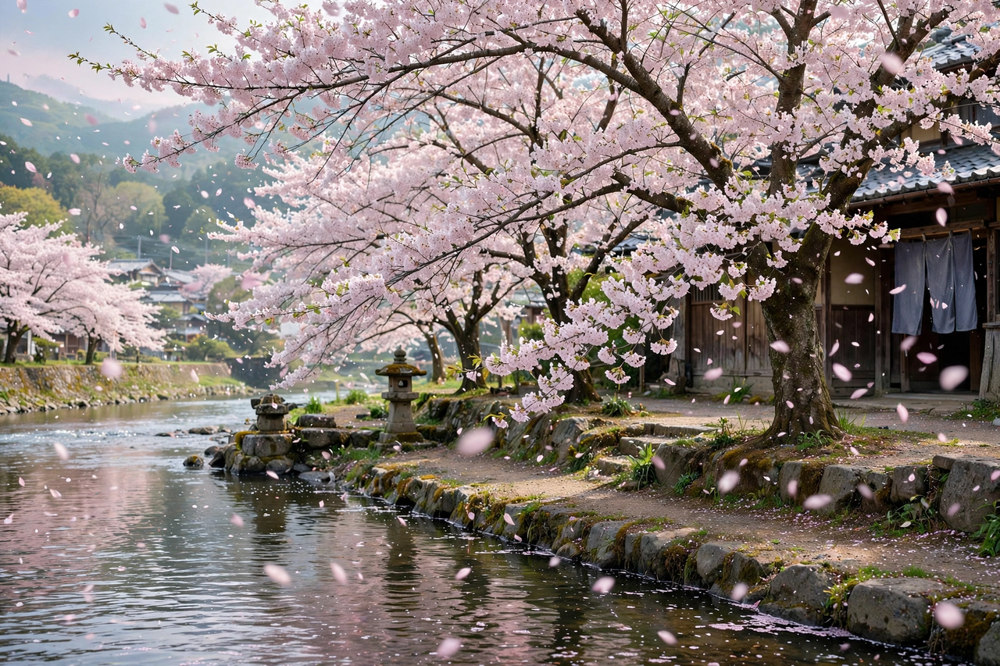

Sakura

Meaning: Cherry blossom
Common cultivar: Somei Yoshino (Prunus × yedoensis)
Season: Late March–April (Japan)
Sakura (桜) is the Japanese word for cherry blossom — the flowers of Japanese cherry trees of the genus Prunus, especially ornamental varieties cultivated for their blossom rather than fruit. Cherry blossoms are a symbol of spring in Japan and carry deep cultural associations with the transience of life, reflecting the aesthetic concept of mono no aware — a gentle sadness at the impermanence of things.
Hanami
The custom of hanami (花見, "flower viewing") — gathering under blooming trees for picnics, parties and contemplation — dates back over a thousand years to the Nara and Heian periods, when it was first an elite pastime centred on plum, then cherry, blossom. Today the Japan Meteorological Agency and media track the sakura zensen (cherry blossom front) as it moves north from Kyushu in late March to Hokkaido in May, and hanami parties fill parks nationwide. The most planted cultivar, Somei Yoshino, is a clone propagated by grafting, so trees bloom almost simultaneously.
Cultural significance
Sakura imagery appears throughout Japanese art, music, coinage (the 100-yen coin) and popular culture, and the flower is an unofficial national symbol. Gifted trees — notably the 3,000 cherry trees given to Washington, D.C. in 1912 — have made blossom festivals international, and sakura-flavoured foods, from pickled blossoms in tea to seasonal sweets and drinks, appear each spring. The blossom of the related fruiting cherry produces the kirsch spirit from its fruit in Europe, while in Japan the flowers and leaves themselves are the celebrated part.